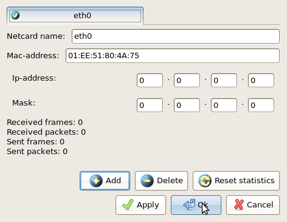
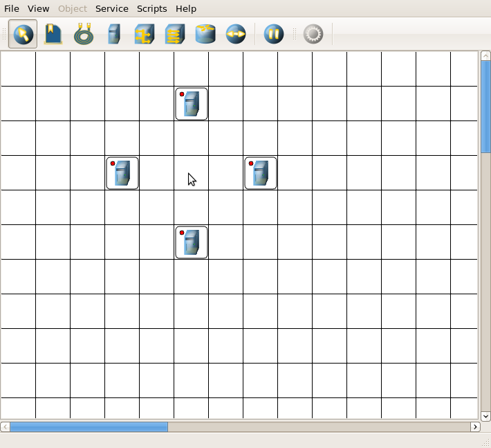
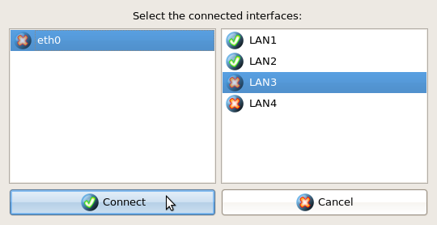
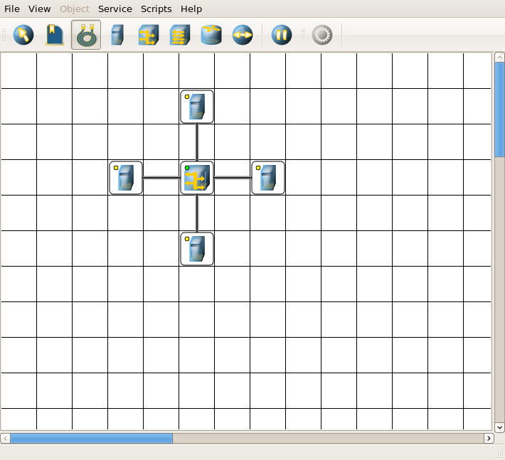

| Manual NetEmul | ||
|---|---|---|
| Пред. | След. | |
There are 2 ways of construction of a network. The first by means of scripts, but it is not interesting. And the second - it is independent,
having put the imagination (in moderate quantities since us this network then still to configurate).
That's it about the second way there will be here a speech. Well and for those who prefers easier path of solution in the program there
is a choice "Scripts".
So, we will start.
Here we have started the program, have created the new scene ("New" "File" in the choice). Now on the toolbar we select, for example,
the computer, and we start to place.
By default, the computer has only 1 interface. To add the adapter it is necessary to select the choice "Interfaces" from the shortcut menu,
or on the panel of parametres. The given dialog box will open:

Then we press button "Add", we select type of the new adapter, we press Ok, and we have one more interface.
At a choice of any tool, it remains active, another will not be selected yet.
After computers are placed, we will put the commutator and each computer with the commutator is combinable, having selected on the toolbar
a wire icon.
To connect two devices a cable, it is necessary to fulfil following operations:

The Attentive user, probably, has noticed circles of various colour in the left upper corner on each tag of the device. We think,
it is necessary to tell about their value:
The result of our operation is More low presented. We hope that All of you таки have tried to create other, more interesting network which is distinct from ours. Further can save a masterpiece, or at once start customisation.

| Prev. | Main | Next |
| The program interface | On level above | Network customisation |